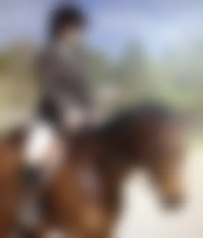
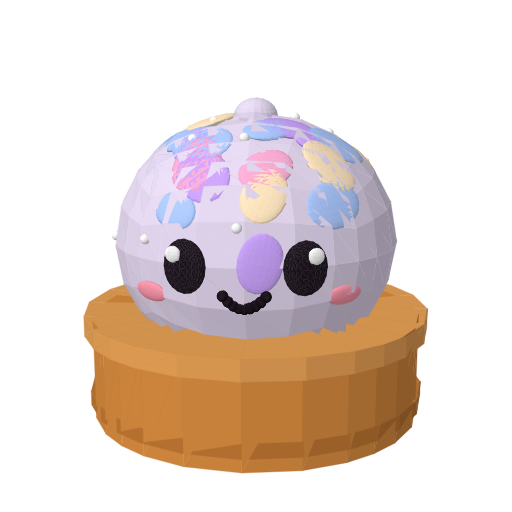
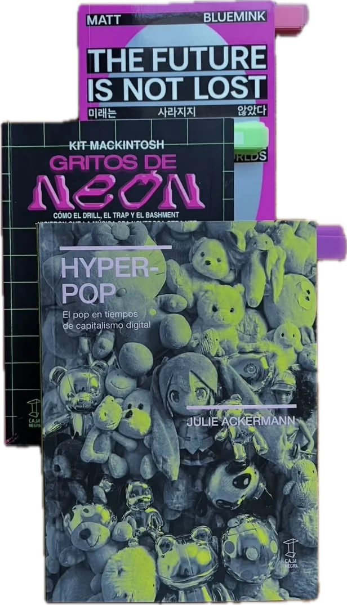

koalawallaland
blog
experiments
♪ live
koalawallaland
樹脂
キーキャップ
(っ˘ω˘ς)
入口 ENTER
THE LAB

MOON RIVER
LoFi life ↗


desk visits
— — — — — —
connecting
MOON RIVER
moonlit records ♡
arriving January
Desk sound on
Hold the kettle to pour. Tap the notebook for the blog.
Resin lab
Koala's desk
Graffiti wall
Squish station ♡
Shop
Experiments
Close
Blog
Aluminum Ghosts
Nov 4, 2026
Close the notebook